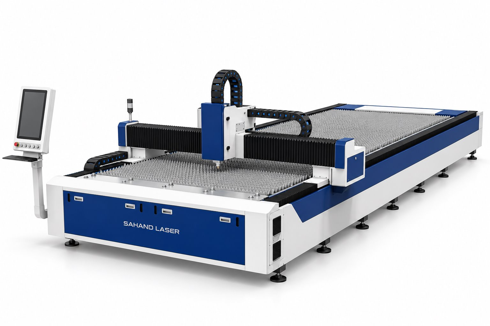

دقت در انتخاب.
قدرت در تولید.
از برش ورق تا جوش و مارکینگ؛ تجهیزات لیزری را بر اساس جنس قطعه، ظرفیت تولید و نیاز واقعی خط خود انتخاب کنید.

هر فرایند، تجهیز مناسب خود را دارد.
نوع فرایند را مشخص کنید و مدلها را همراه با اطلاعات فنی موجود بررسی کنید.
تجهیزات را دقیقتر بشناسید.
۱۰۶ رکورد محصول از کاتالوگ موجود سهند لیزر؛ مشخصات مرجع خانواده از اطلاعات اختصاصی محصول تفکیک شدهاند.
در کنار دستگاه،
در کنار تولید شما.
مشاوره انتخاب، راهاندازی و خدمات فنی برای دستگاه، سورس و قطعات لیزر صنعتی.
تماس با پشتیبانی ↙نصب، راهاندازی و آموزش
آمادهسازی دستگاه و آموزش کاربری متناسب با فرایند تولید.
عیبیابی و تعمیرات تخصصی
بررسی دستگاه، سورس، هد و مدار خنککاری بر اساس مدل و نشانههای خطا.
تأمین قطعات و مشاوره سازگاری
برای انتخاب قطعه، مدل دقیق، شماره فنی و شرایط کار دستگاه را ارسال کنید.
از نیاز فنی تا انتخاب تجهیز.
تعریف قطعه و فرایند
جنس، ضخامت، ابعاد و نوع عملیات موردنیاز را مشخص کنید.
بررسی پیکربندی
توان، میز، هد و تجهیزات جانبی با نیاز تولید تطبیق داده میشوند.
بررسی نمونه واقعی
کیفیت خروجی را روی قطعه و شرایط کاری خود ارزیابی کنید.
انتخاب و راهاندازی
مشخصات نهایی، شرایط خدمات و برنامه آموزش را پیش از سفارش ثبت کنید.
برای خط تولیدتان
از اینجا شروع کنیم.
نیاز فنی خود را ثبت کنید تا متن درخواست برای ارسال در واتساپ آماده شود.